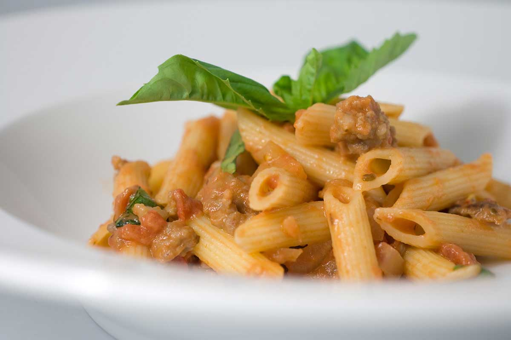

Creamy Sausage and Tomato Pasta
Yield: 4-6 servings
Cooking Time: 1 hour


Ingredients
- 1 cup heavy cream
- 5-6 big leaves of fresh basil, chopped
- 12 ounces penne pasta
- Grated Parmesan for topping
- Basil leaves for garnish
Directions
(To keep your place on the list as you cook, click the current step you're on!)- Cook the pasta in salted water al dente, according to package directions.
- While pasta is cooking, brown the sausage. Remove the casings, brown and crumble the sausages like you would ground beef.
- Add the onions and garlic to the sausage and saute for a couple of minutes.
- Pour in the entire can of diced tomatoes and the tomato sauce and heat through.
- Pour in the cream and heat through. The longer you cook the sauce the thicker it will get so simmer it until it is the consistency you want.
- Add the fresh basil and let it simmer for a few minutes.
- Finally, mix the sausage sauce with the pasta and serve.
- Top each serving with a sprinkle of Parmesan cheese and garnish with basil.